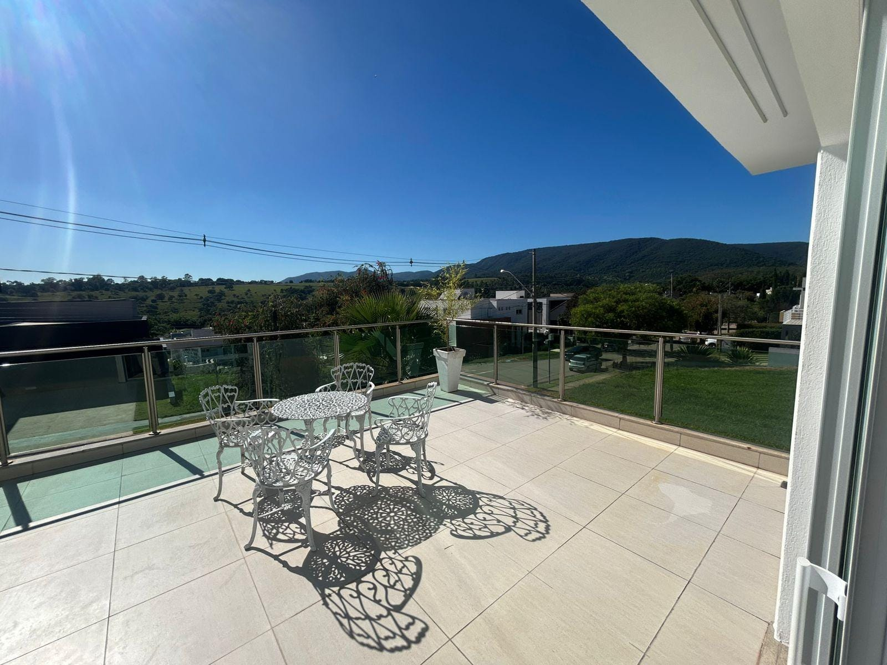

TAVEIRA · RESERVA DA SERRA
Um lugar para ficar.
A varanda, por outro ponto de vista.
Explore o estudo e compare com a foto do imóvel.

FOTOGRAFIA DO IMÓVEL
Entre na varanda.
Carregamento sob demanda · versão leve
ESTUDO 3D / PROPORÇÕES APROXIMADAS
Arraste para olhar ao redor
01 VarandaExterior parcial · CA0403_LI